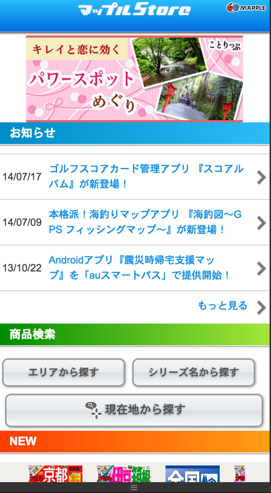
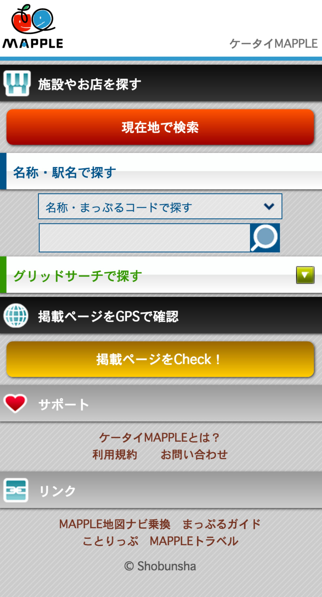

AboutMe
Skills
Me
Work history
GMO Research, Inc.
Survey system
Writed a lot of JScript to controle survey and created some tools with VBA or GoogleAppsScript.
Also joined to a team to migrate the server and update the system.
- JScript
- VBA
- Google Apps Script
- Shell
- Power Shell
- Windows Server 2008/2012
Gree, Inc.
Joined a team to create a web and e-mail magazine of celebrities.
- HTML
- CSS
- Sass
SNS platform

Maintain the platform HTML,CSS and images.
Also did performance tuning.
- HTML
- CSS
- Sass
Mapple ON Co., Ltd.
Magazine and Apps show case
Create a web site to show the publishment.
- HTML
- CSS
- PHP
- JavaScript
- Smarty
- SQL
Mobile web service renewal

Created a smartphone version of mobile guide book web service.
Replaced the HTML/CSS and added function to get GPS to show the distance for places.
- HTML
- CSS
- JavaScript
- PHP
- Smarty
- SQL
Replaced Baser CMS to PHP and Smarty webpage.
Some data, such as releases and Q&A also used to show in the webview of Apps.
- HTML
- CSS
- JavaScript
- PHP
- SQL
- Smarty
Itec Hankyu Hanshin Co.,Ltd.
Disital signage for Hotel

Created a demo flash movie. Some of them were conclude a function to show XML data of the conference rooms.
- ActionScript 3.0
SNS for picture sharing

Asigned as a front-end engineer on the very end of project.
Helped solving probrem for both front-end and php.
- HTML
- CSS
- jQuery
- JavaScript
- PHP
- Cake PHP